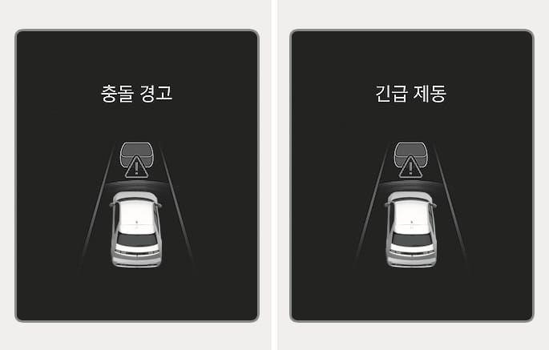

전방 충돌방지 보조 (FCA)
주행 중 전방 또는 주변의 차량, 이륜차, 보행자 및 자전거 탑승자를 인식하여 충돌 위험을 판단합니다. 상황에 따라 경고문과 경고음 등으로 운전자에게 알려주고, 차량 제어로 충돌을 회피하도록 도와줍니다.
-
FCA는 Forward Collision-Avoidance Assist의 약자입니다.
-
전방 충돌방지 보조가 작동하는 경우에는 전방 안전 (
O ) 경고등 또는 긴급 조향 (P ) 경고등의 점멸, 경고문, 경고음, 스티어링 휠 진동을 통해 충돌 경고 또는 긴급 제동을 알립니다. -
긴급 제동 또는 관련한 충돌 경고 중 비상 경고등 버튼을 눌러 경고음을 끌 수 있습니다.
-
충돌 경고, 긴급 제동, 긴급 조향, 제동으로 정차한 경우에는 클러스터에 경고문을 표시합니다.

2C_FCABasicInfo
야간 주행 시 이륜차 인식 성능이 저하되어 전방 충돌방지 보조가 일시적으로 제한되거나 작동하지 않을 수 있습니다.